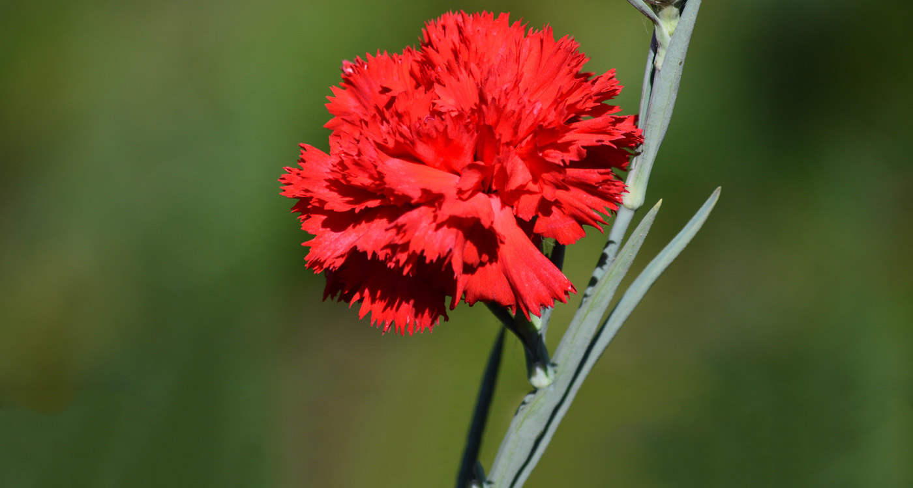
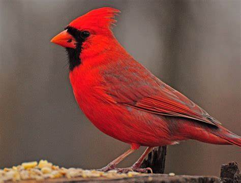
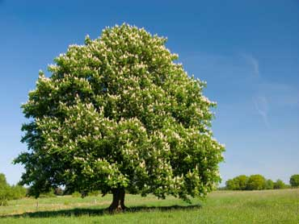

Initially colonized by French fur traders, Ohio became a British colonial possession following the French and Indian War in 1754. At the end of the American Revolution, Britain ceded control of the territory to the newly formed United States, which incorporated it into the Northwest Territory. Ohio became a state on March 1, 1803, although no formal declaration was made until 1953 when President Dwight Eisenhower officially signed the documents making it a state, retroactive to the original date. Ohio is sometimes called the “Mother of Modern Presidents,” having sent seven Ohioans (both natives and residents)to the White House since 1869. Ohio is also known as the home of the Rock and Roll Hall of Fame in Cleveland, the NationalUnderground Railroad Freedom Center in Cincinnati and the National Football League Hall of Fame in Canton.
| Date of Statehood | Capital | Population | Size |
|---|---|---|---|
| March 1, 1803 | Columbus | 11.80 million | 44,825 square miles |
With God All Things Are Possible
Red Carnation
Cardinal
Buckeye
Interesting facts